Владимир Егорович Маковский
Освящение публичного дома (эскиз), 1900
Государственный музей истории религии, Санкт-Петербург

Андерс Леонард Цорн
Impressions de Londres (Впечатления от Лондона), 1890
Гётеборгский художественный музей, Гётеборг

Рудольф фон Альт
Die alte Fichte in Bad Gastein (Старая ель в Бад-Гастайне), 1899
Музей Леопольда, Вена
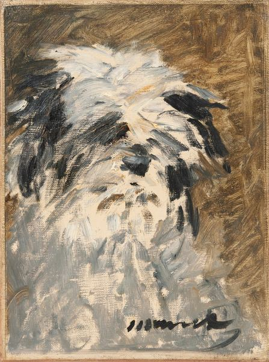
Эдуард Мане
Le Chien Minnay (Собака Минней), 1879
Частная коллекция
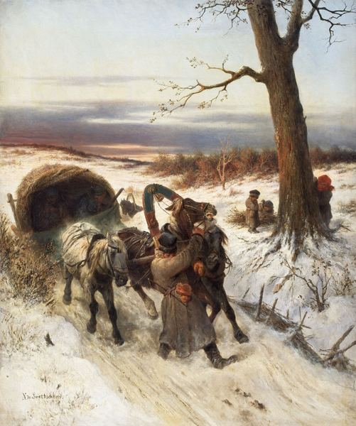
Николай Егорович Сверчков
Зимний пейзаж с санями, запряженными лошадьми, 1868
Музей изящных искусств, Гент
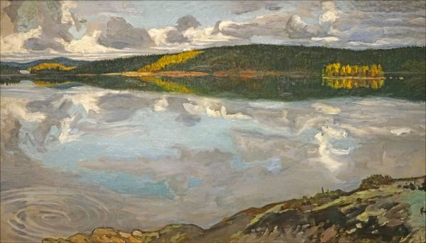
Аксели Галлен-Каллела
Ruovesi (Озеро Руовеси), 1896
ГМИИ им. А.С. Пушкина, Москва
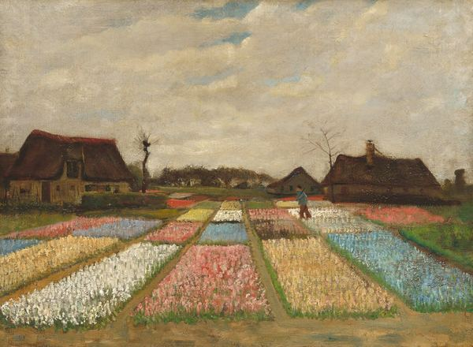
Винсент Виллем ван Гог
Bloembedden in Holland (Цветники в Голландии), 1883
Национальная галерея искусства, Вашингтон
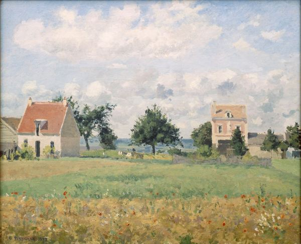
Жакоб Абраам Камиль Писсарро
La Maison Rouge (Красный дом), 1873
Портлендский художественный музей, Портленд
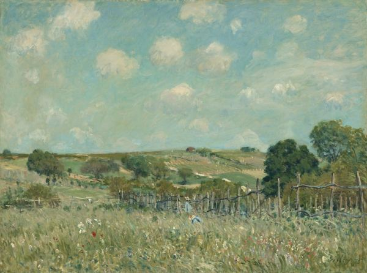
Альфред Сислей
La Prairie (Луг), 1875
Национальная галерея искусств, Вашингтон
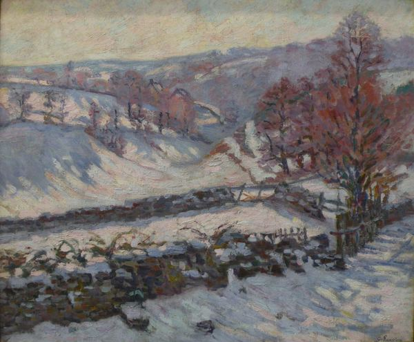
Жан-Батист Арман Гийомен
Paysage de neige à Crozant (Снежный пейзаж в Крозанте), 1895
Музей современного искусства Андре Мальро, Гавр
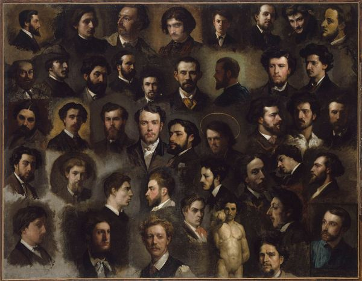
Анонимные художники, Феликс Огюстен Милиус, Александр-Огюст Розе, Альфред Адольф Ленгле, Огюст Русслен, Огюст Александр Хирш, Эмиль-Анри Лапорт, Огюст Ренуар, Поль Милье, Леонс-Люсьен Кордье, Альбер Дарье
Quarante-trois portraits de peintres de l'atelier Gleyre (Сорок три портрета художников мастерской Глейра), между 1856 и 1868 годами
Малый дворец, музей изящных искусств города Парижа, Париж
Станислав Юлианович Жуковский
Былое. Комната старого дома, 1912
Национальный художественный музей Республики Беларусь, Минск
Аурелиано де Беруэте
Paisaje de Torrelodones (Пейзаж Торрелодонес), 1891
Национальный музей Прадо, Мадрид

Альфред Сислей
Nature morte, pommes et raisins (Натюрморт, яблоки и виноград), 1880-81
Институт искусств Стерлинга и Франсин Кларк, Уильямстаун
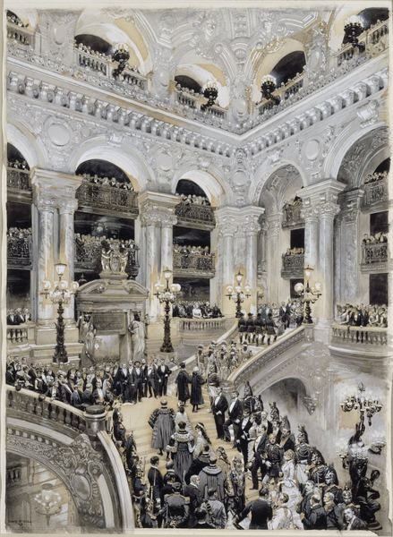
Жан Батист Эдуар Детай
Inauguration de l'Opéra de Paris, 5 janvier 1875 (Открытие Парижской оперы, 5 января 1875 года), 1878
Коллекции Версальского дворца, Версаль
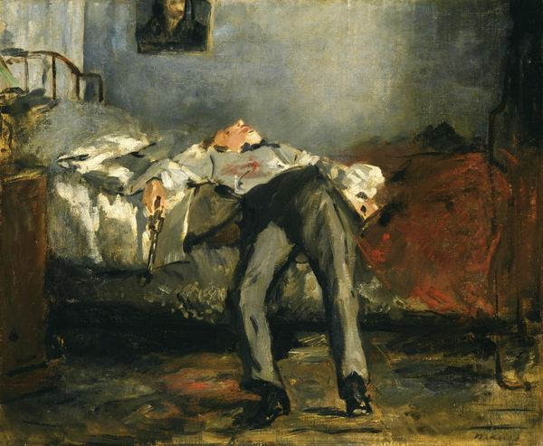
Эдуард Мане
Le Suicidé (Самоубийство), 1877
Собрание Фонда Эмиля Бюрле, Цюрих
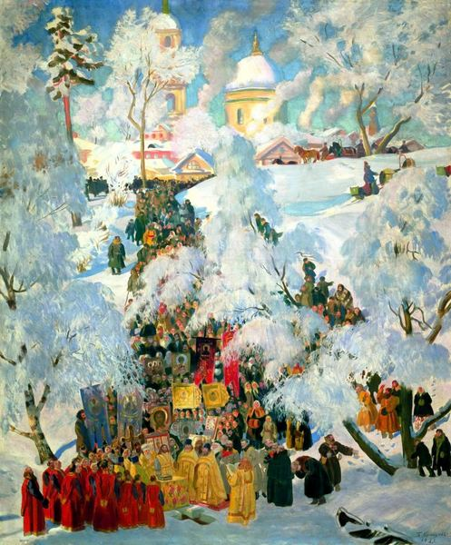
Борис Михайлович Кустодиев
Крещенское водосвятие, 1921
Частная коллекция
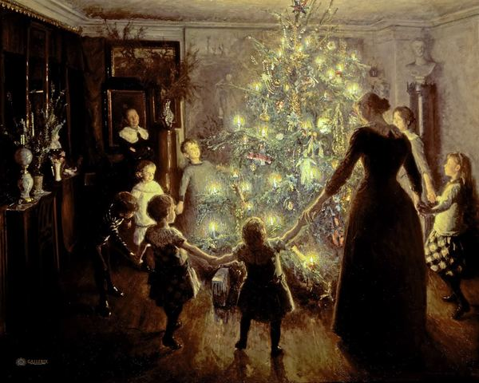
Вигго Юхансен
Glade jul (Счастливого Рождества), 1891
Собрание Хиршпрунга, Копенгаген
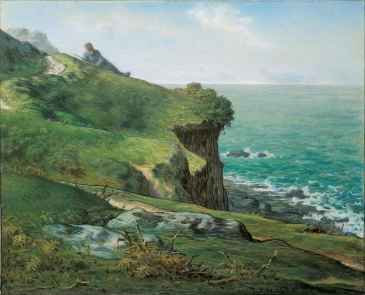
Жан-Франсуа Милле
Falaises de Gréville (Скалы Гревиля), 1871
Музей искусств Охара, Курасики
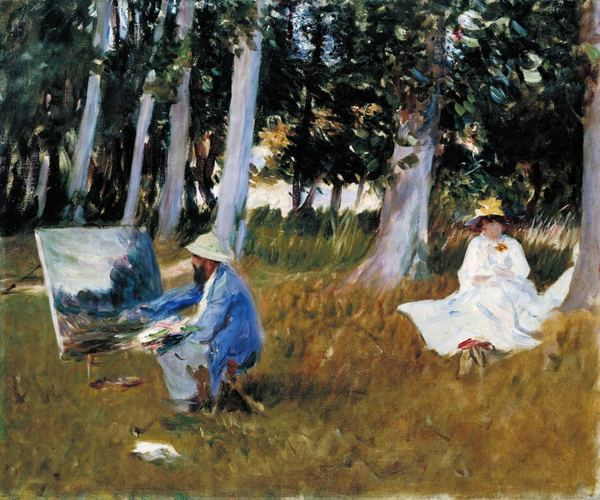
Джон Сингер Сарджент
Claude Monet Painting by the Edge of a Wood (Картина Клода Моне «На опушке леса»), 1885
Британская галерея Тейт, Лондон
Ялмар Эйлиф Эммануэл Петерссен
Måneopgang over klitterne (Восход луны над дюнами), 1883
Skagens Museum, Скаген
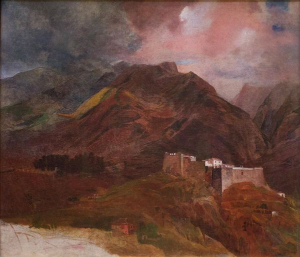
Карл Павлович Брюллов
Вид форта Пику на острове Мадейра (Неоконченная картина), 1849–1850
Государственная Третьяковская галерея, Москва
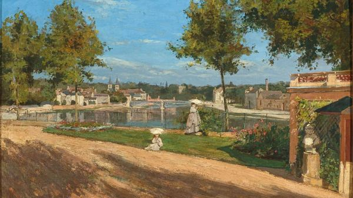
Станислас Анри Руар
La Terrasse au bord de la Seine à Melun (Терраса на берегу Сены в Мелуне), 1874
Музей д’Орсе, Париж
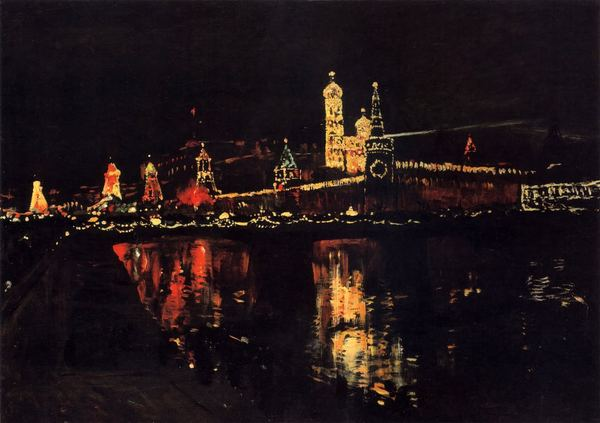
Исаак Ильич Левитан
Иллюминация Кремля, 1896
Частная коллекция, США
Эжен Луи Буден
Le Clocher de Sainte-Catherine, Honfleur (Колокольня Святой Екатерины, Онфлёр), 1897
Музей Эжена Будена, Онфлёр
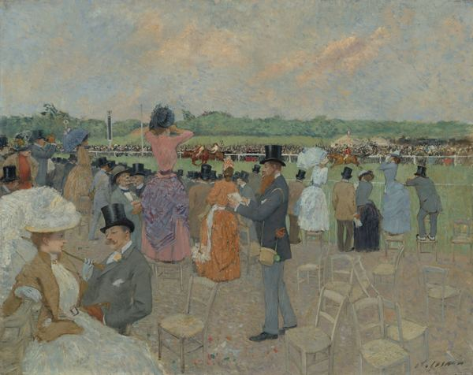
Жан Луи Форен
Aux Courses à Longchamp (На скачках в Лоншане), 1891
Национальная галерея искусства, Вашингтон
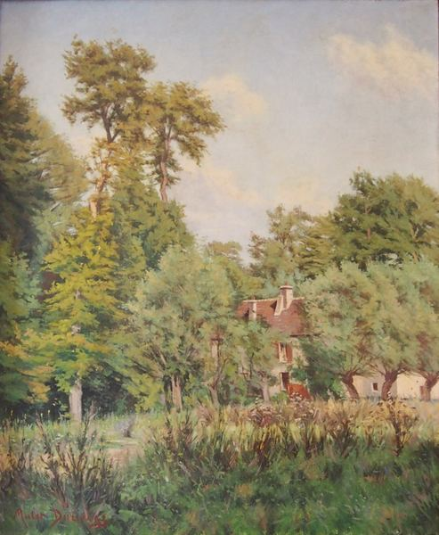
Эмильен Мюло-Дюриваж
Paysage du Cotentin, près des bords de l'Ouve (Пейзаж в Котантене на берегу реки Уве), XIX в.
Частная коллекция
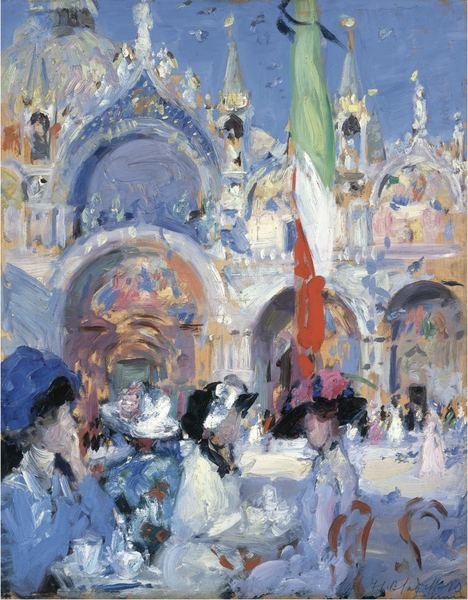
Фрэнсис Кэмпбелл Буало Каделл
Florian's café, Venice (Кафе Флориан, Венеция), 1910
Частное собрание
Иньяс-Анри-Жан-Теодор Фантен-Латур
La leçon de dessin dans l'atelier (Урок рисования в мастерской), 1879
Королевский музей изящных искусств, Брюссель
Гюстав Кайботт
Jeune homme à sa fenêtre (Молодой человек у окна), 1876
Музей Гетти, Лос-Анджелес
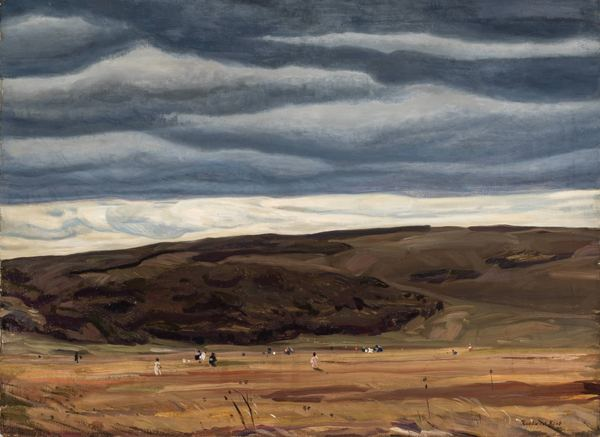
Рокуэлл Кент
Cranberrying, Monhegan (Сбор клюквы, Монхиган),1907
Государственный художественный музей Платтсбурга, Галерея Рокуэлла Кента, Платтсбург
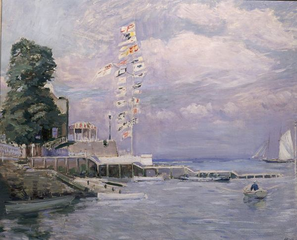
Поль Сезар Эллё
Le Grand Pavois (Гранд Павуа), 1901
Частная коллекция
Жан-Батист Арман Гийомен
Vue du Puy-de-Dôme (Вид на Пюи-де-Дом), 1899
Музей Барберини, Потсдам
Константин Аполлонович Савицкий
У мирового суда, XIX век
Пермская государственная художественная галерея, Пермь

Анри Мари Раймон де Тулуз-Лотрек-Монфа
Les travailleurs de la gare routière (Рабочие на автобусной станции), 1888
Частная коллекция, Монте-Карло
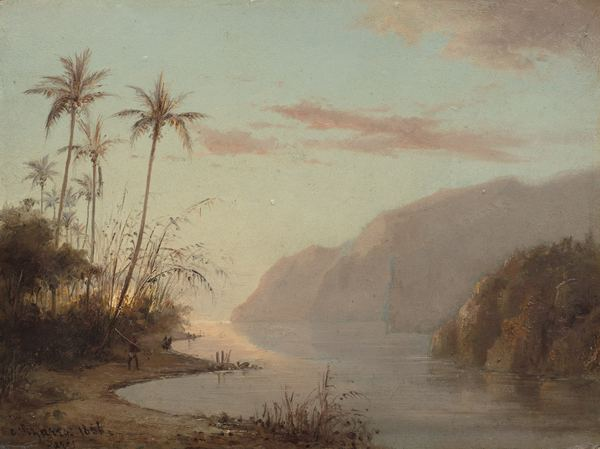
Жакоб Абраам Камиль Писсарро
Une Crique a Saint-Thomas (Antilles) (Бухта на острове Сент-Томас (Антильские острова)), 1856
Национальная галерея искусства, Вашингтон
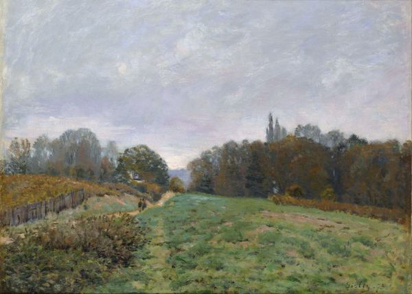
Альфред Сислей
Landscape at Louveciennes (Пейзаж в Лувесьене), 1873
Национальный музей западного искусства, Токио
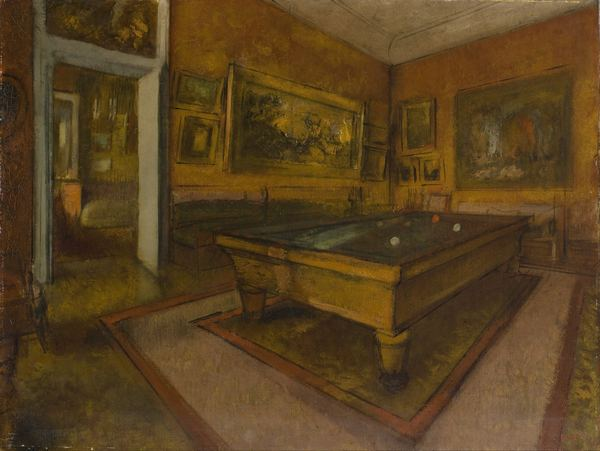
Илер-Жермен-Эдгар де Га (Эдгар Дега)
Salle de billard au Ménil-Hubert (Бильярдная в Мениль-Юбер), 1892
Музей д’Орсе, Париж
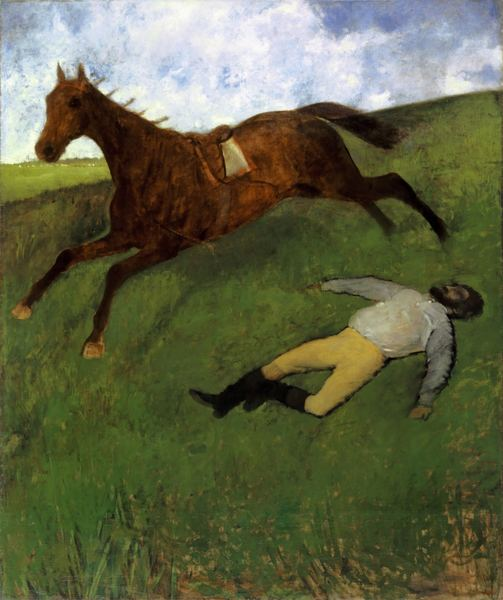
Илер-Жермен-Эдгар де Га (Эдгар Дега)
Jockey blessé (Раненый жокей), 1896-1898
Базельский художественный музей, Базель
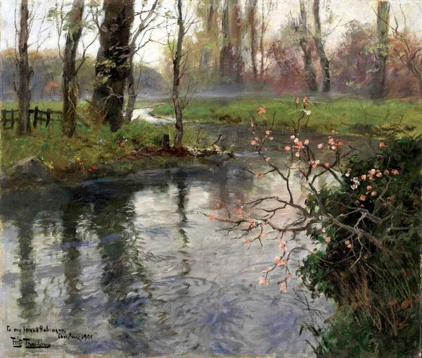
Йохан Фредерик Фриц Таулов
A Stream in Springtime (Ручей в весеннее время), 1901
Частная коллекция
Жан Фредерик Базиль
Paysage au bord du Lez (Пейзаж на берегу Лез), 1870
Институт искусств Миннеаполиса, Миннеаполис
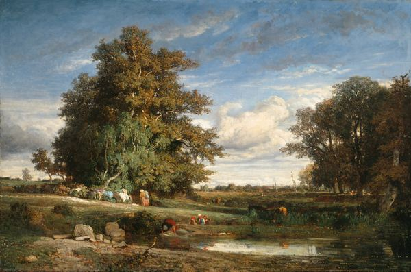
Констан Тройон
Le Marais (Болото), 1840
Чикагский институт искусств, Чикаго
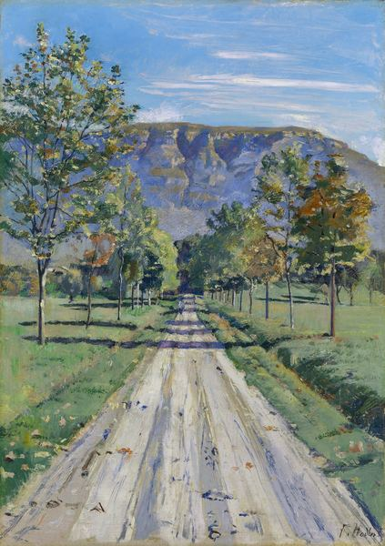
Фердинанд Ходлер
Die Strasse nach Evordes (Дорога в Эвордес), 1890
Винтертурский художественный музей, Винтертур
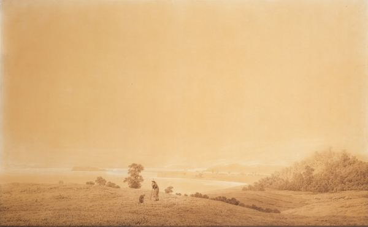
Каспар Давид Фридрих
Ansicht der Ostküste Rügens mit einem Schäfer (Вид на восточный берег острова Рюген с пастухом), 1805–06
Метрополитен-музей, Нью-Йорк
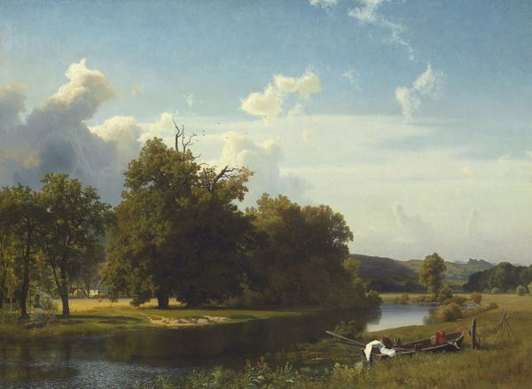
Альберт Бирштадт
A River Landscape, Westphalia (Речной пейзаж, Вестфалия), 1855
Частная коллекция
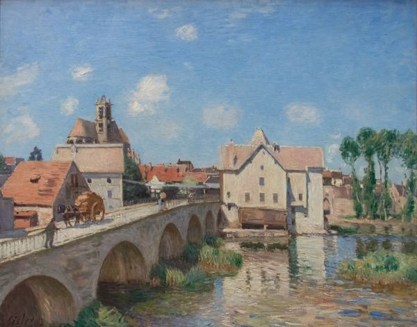
Альфред Сислей
Le Pont de Moret (Мост в Морэ), 1893
Музей д’Орсе, Париж
Жан Луи Форен
Les courses (Скачки), 1888
ГМИИ им. А.С. Пушкина, Москва
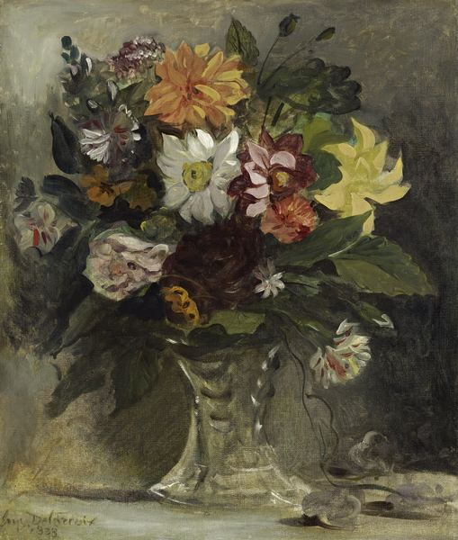
Фердинан Виктор Эжен Делакруа
Bouquet de fleurs (Ваза с цветами), 1833
Национальная галерея Шотландии, Эдинбург
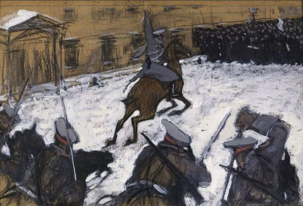
Валентин Александрович Серов
Солдатушки, бравы ребятушки, где же ваша слава?, 1905
ГРМ, Санкт-Петербург
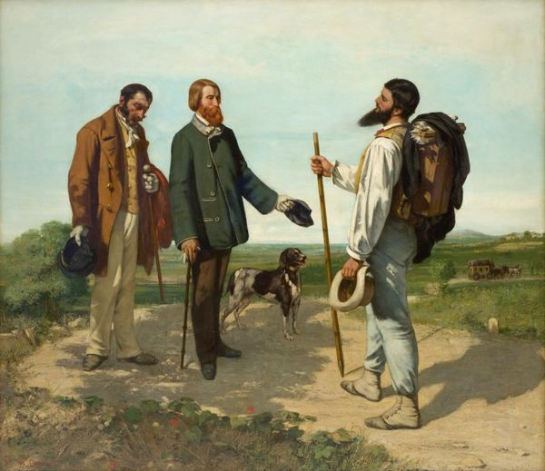
Жан Дезире Гюстав Курбе
La Rencontre ou Bonjour Monsieur Courbet (Встреча или Здравствуйте, мистер Курбе), 1854
Музей Фабра, Монпелье
Альфред Сислей
Rue Eugène Moussoir à Moret: L'hiver (Улица Эжена Муссуара в Море: Зима), 1891
Метрополитен-музей, Нью-Йорк
Йохан Фредерик Фриц Таулов
Горная речка, между 1887 и 1890 годами
ГМИИ им. А.С. Пушкина, Москва
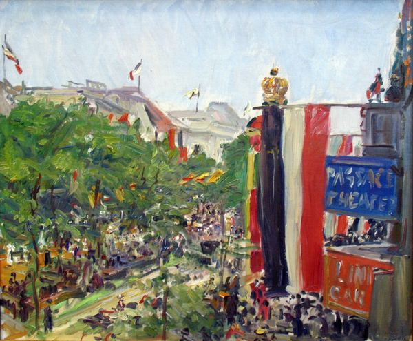
Франц Теодор Макс Слефогт
Unter den Linden (Унтер-ден-Линден), 1913
Старая национальная галерея, Берлин
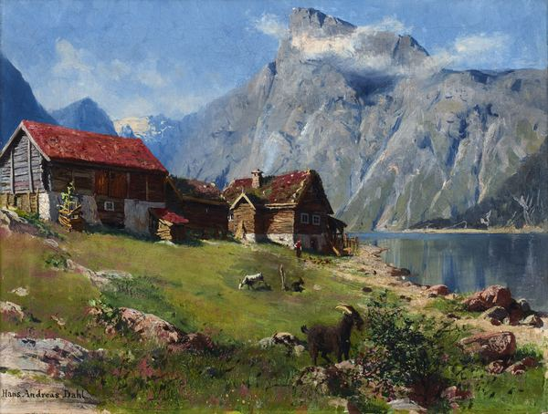
Ханс Даль
Норвежский фьорд с козами, 1910-е
Частное собрание
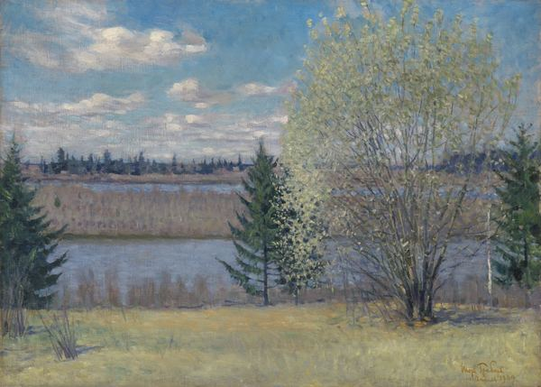
Игорь Эммануилович Грабарь
Весенний пейзаж. Апрель, 1939
Частное собрание
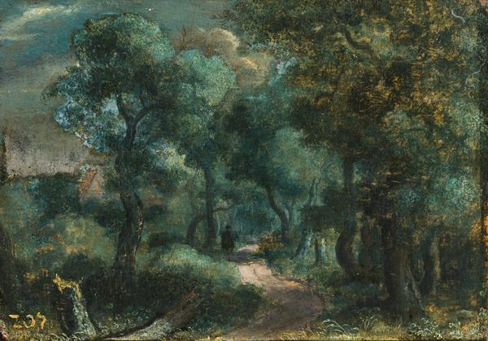
Геркулес Сегерс
Woodland Path (Лесная тропа), около 1618-20
Частная коллекция
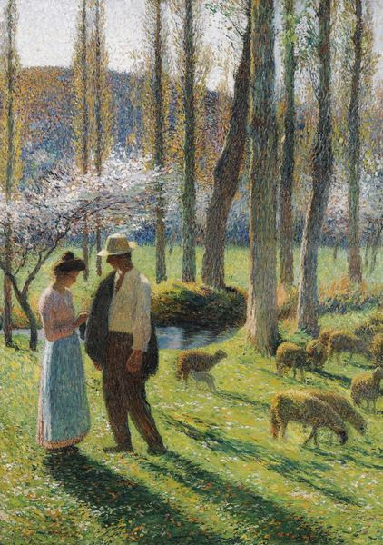
Анри Жан Гийом Мартен
Le paysan et la bergère (Крестьянин и пастушка), 1903
Частная коллекция, Франция
Константин Фёдорович Юон
Парад на Красной площади 7 ноября 1941 года, 1949
ГИМ, Москва
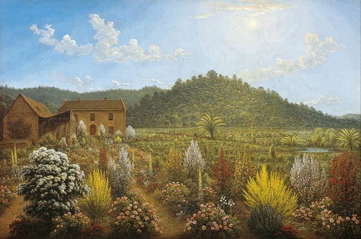
Джон Гловер
A view of the artist's house and garden, in Mills Plains, Van Diemen's Land (Вид на дом и сад художника в Миллс-Плейнс, Земля Ван-Димена), 1835
Художественная галерея Южной Австралии, Аделаида
Макс Либерман
Die Kartoffelernte (Собирание картофеля), 1875
Музей Кунстпаласт, Дюссельдорф
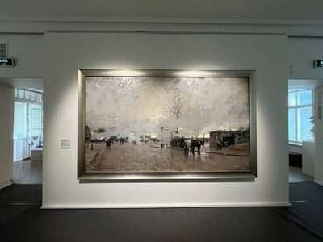
Луиджи Алоис-Франсуа-Жозеф Луар
Smoke on the Paris Circuit Line (Дым окружной парижской железной дороги), 1885
ГМИИ им. А.С. Пушкина, Москва
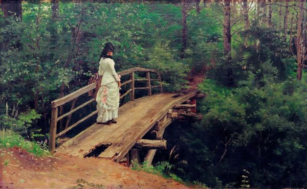
Илья Ефимович Репин
Летний пейзаж (В.А.Репина на мостике в Абрамцеве), 1879
Отдел личных коллекций, ГМИИ им. А.С. Пушкина, Москва
Жан Дезире Гюстав Курбе
Dorfausgang im Winter (Окраина деревни зимой), 1868
Штеделевский художественный институт, Франкфурт-на-Майне
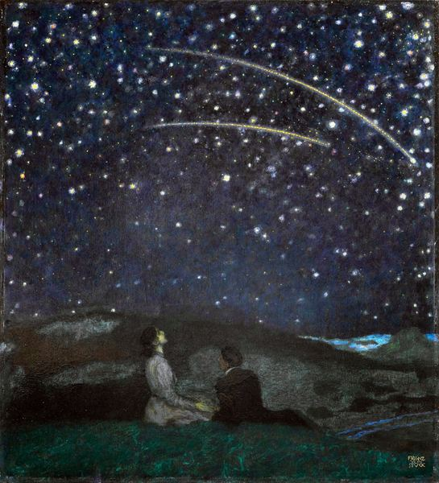
Франц фон Штук
Sternschnuppen (Franz und Mary Stuck) (Падающие звёзды), 1912
Частная коллекция, Швейцария
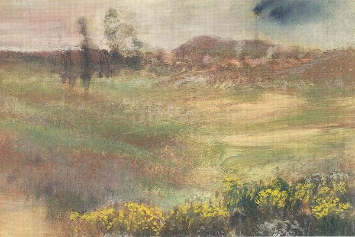
Илер-Жермен-Эдгар де Га (Эдгар Дега)
Paysage Avec Fumée de Cheminées (Пейзаж с дымовыми трубами), 1890-1893
Чикагский институт искусств, Чикаго
Жан Фредерик Базиль
L’atelier de la rue de Furstenberg (Мастерская художника на улице Фюрстенберг), 1865
Музей Фабра, Монпелье
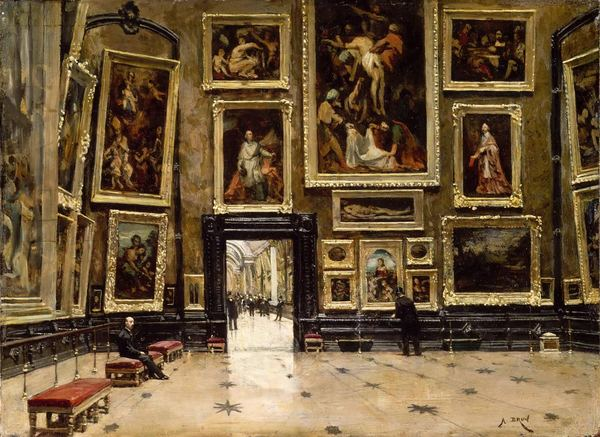
Александр Жан-Батист Брюн
Vue du Salon Carré au Louvre (Вид на Салон Карре в Лувре), 1880
Лувр, Париж (в запаснике)
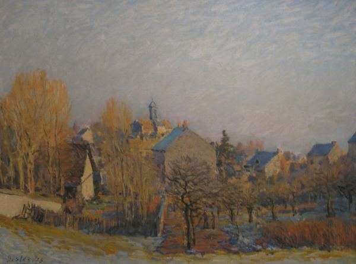
Альфред Сислей
La gelée à Louvecienne (Мороз в Лувесьенне), 1873
ГМИИ им. А.С. Пушкина, Москва
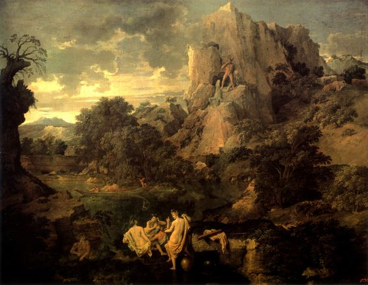
Никола Пуссен
Paysage avec Hercule et Cacus (Пейзаж с Геркулесом и Какусом), около 1660
ГМИИ им. А.С. Пушкина, Москва
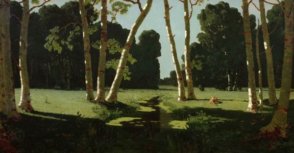
Архип Иванович Куинджи
Берёзовая роща, 1879
Государственная Третьяковская галерея, Москва
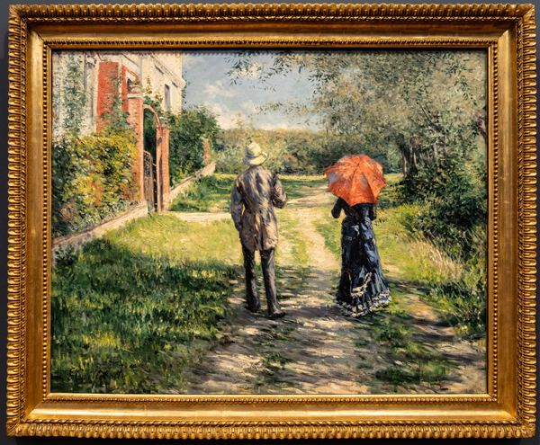
Гюстав Кайботт
Chemin montant (Восходящая дорога), 1881
Частная коллекция
Фредерик Чайльд Гассам
Union Square in Spring (Юнион-сквер весной), 1896
Художественный музей колледжа Смит, Нортхемптон
Николай Дмитриевич Кузнецов
В праздник, 1879
Государственная Третьяковская галерея, Москва
Александр Иванович Морозов
Выход из церкви в Пскове, 1864
Государственная Третьяковская галерея, Москва

Николай Александрович Тархов
Козы на солнце, 1904
Государственная Третьяковская галерея, Москва
Каспар Давид Фридрих
Morgennebel im Gebirge (Утренний туман в горах), 1808
Государственный музей Тюрингии, Хайдексбург
Пьер Огюст Ренуар
Les Fiancés (Пара), около 1868
Музей Вальрафа-Рихарца и Фонд Корбо, Кёльн